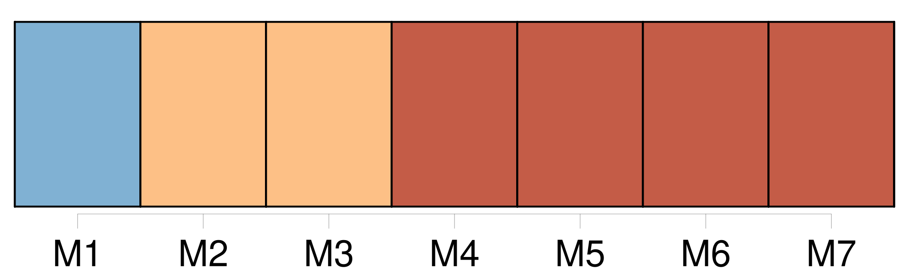
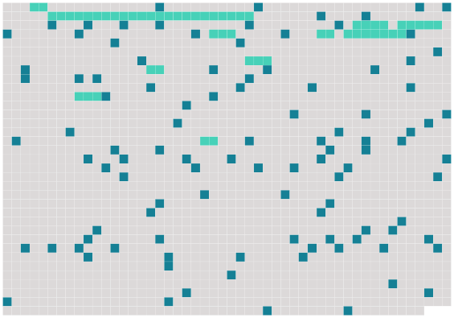

Longueur nb maillons : 116 mentions |
  |
J'ai aimé [cette femme] d'un élan frénétique... [1 phrases] [L'] ai -je aimée?? [1 phrases] [Elle] m'a possédé âme et corps, envahi, lié. J'ai été, je suis [sa] chose, [son] jouet.
J'appartiens à [son sourire, à sa bouche, à son regard, aux lignes de son corps, à la forme de son visage] ; je halète sous la domination de [son] apparence extérieure ; mais [Elle] , la femme de tout cela, l'être de ce corps, je [la] hais, je [la] méprise, je [l'] exècre, je [l'] ai toujours haïe, méprisée, exécrée ; car [elle] est perfide, bestiale, immonde, impure ; [elle] est [XXXla femme de perditionXXX] , [l'animal sensuel et faux] chez [qui] l'âme n'est point, chez [qui] la pensée ne circule jamais comme un air libre et vivifiant ; [elle] est [la bête humaine] ; moins que cela : [elle] n'est qu' [un flanc] , [une merveille de chair douce et ronde] [qu'] habite l'Infamie. [1 phrases] Entre [ses] bras toujours ouvert je m'épuisais dans une rage d'inassouvissable désir. [Ses] yeux, comme s'ils m'eussent donné soif, me faisaient ouvrir la bouche. [3 phrases]
[Ses] lèvres, remuées d'un tremblement, laissaient jaillir parfois la pointe rosé et mouillée de [sa] langue, qui palpitait comme celle d'un reptile ; et [ses paupières lourdes] se relevaient lentement, découvrant ce regard ardent et anéanti qui m'affolait.
En [l'] étreignant dans mes bras je regardais [son] oeil et je frémissais, secoué tout autant par le besoin de tuer [cette bête] que par la nécessité de [la] posséder sans cesse.
Quand [elle] marchait à travers ma chambre, le bruit de chacun de [ses] pas faisait une commotion dans mon coeur ; et quand [elle] commençait à se dévêtir, [laissait] tomber [sa] robe, et sortant, infâme et radieuse, du linge qui s'écrasait autour d' [elle] , je sentais tout le long de mes membres, le long des bras, le long des jambes, dans ma poitrine essoufflée, une défaillance infinie et lâche. Un jour, je m'aperçus qu' [elle] était lasse de moi. Je le vis dans [son] oeil, au réveil. Penché sur [elle] , j'attendais chaque matin ce premier regard. Je [l'] attendais, plein de rage, de haine, de mépris pour [cette brute endormie] [dont] j'étais l'esclave. Mais quand le bleu pâle de [sa] prunelle, ce bleu liquide comme de l'eau, se découvrait, encore languissant, encore fatigué, encore malade des récentes caresses, c'était comme une flamme rapide qui me brûlait, exaspérant mes ardeurs.
Ce jour -là, quand s'ouvrit [sa] paupière, j'aperçus un regard indifférent et morne qui ne désirait plus rien. [4 phrases] Quand je [l'] appelais des bras et des lèvres, [elle] se retournait ennuyée, murmurant : « Laissez [-moi] donc!! [1 phrases] ! » ou bien : « Ne serai [-je] jamais tranquille!! [1 phrases]
Je savais bien qu' [elle] recommencerait bientôt, qu'un autre viendrait pour rallumer [ses] sens. [2 phrases] j'épiais ; [elle] ne m'aurait pas trompé ; mais [elle] restait froide, endormie. [Elle] disait parfois : « Les hommes me dégoûtent. [1 phrases] Alors je fus jaloux d' [elle -même] ; jaloux de [son] indifférence, jaloux de la solitude de [ses] nuits ; jaloux de [ses] gestes, de [sa] pensée que je sentais toujours infâme, jaloux de tout ce que je devinais.
Et quand [elle] avait parfois, à [son] lever, ce regard mou qui suivait jadis nos nuits ardentes, comme si quelque concupiscence avait hanté [son] âme et remué [ses] désirs, il me venait des suffocations de colère, des tremblements d'indignation, des démangeaisons de [l'] étrangler, de [l'] abattre sous mon genou et de [lui] faire avouer, en [lui] serrant la gorge, tous les secrets honteux de [son] coeur. [2 phrases] Voilà qu'un soir je [la] sentis heureuse. Je sentis qu'une passion nouvelle vivait en [elle] [1 phrases]
[Elle] palpitait comme après mes étreintes ; [son] oeil flambait, [ses] mains étaient chaudes, toute [sa] personne vibrante dégageait cette vapeur d'amour d'où mon affolement était venu.
Je feignis de ne rien comprendre, mais mon attention [l'] enveloppait comme un filet. [2 phrases]
[Elle] s'épanouissait dans l'éclosion d'une incompréhensible ardeur ; [elle] s'apaisait dans le bonheur d'une insaisissable caresse. [7 phrases] Un soir, je vous l'ai dit, un soir, comme [elle] rentrait d'une longue promenade à cheval, [elle] tomba, les pommettes rouges, la poitrine battante, les jambes cassées, les yeux meurtris, sur une chaise basse, en face de moi. [1 phrases] [Elle] aimait!! [1 phrases]
Alors, perdant la tête, pour ne plus [la] contempler, je me tournai vers la fenêtre, et j'aperçus un valet emmenant par la bride vers l'écurie son grand cheval, qui se cabrait. [Elle] aussi suivait de l'oeil l'animal ardent et bondissant.
Puis, quand il eut disparu, [elle] s'endormit tout à coup. [3 phrases]
Chaque matin, dès l'aurore, [elle] partait au galop par les plaines et les bois ; et, chaque fois, [elle] rentrait alanguie, comme après des frénésies d'amour. [1 phrases]
j'étais jaloux maintenant du cheval nerveux et galopant ; jaloux du vent qui caressait [son] visage quand [elle] allait d'une course folle ; jaloux des feuilles qui baisaient, en passant, [ses] oreilles ; des gouttes de soleil qui [lui] tombaient sur le front à travers les branches ; jaloux de la selle qui [la] portait et qu' [elle] étreignait de [sa] cuisse.
C'était tout cela qui [la] faisait heureuse, qui [l'] exaltait, [l'] assouvissait, [l'] épuisait et me [la] rendait ensuite insensible et presque pâmée. [1 phrases] Je fus doux et plein d'attentions pour [elle] Je [lui] tendais la main quand [elle] allait sauter à terre après [ses] courses effrénées.
L'animal furieux ruait vers moi ; [elle] le flattait sur son cou recourbé, l' [embrassait] sur ses naseaux frémissants sans essuyer ensuite [ses] lèvres ; et le parfum de [son] corps, en sueur comme après la tiédeur du lit, se mêlait sous ma narine à l'odeur âcre et fauve de la bête. [1 phrases]
[Elle] passait chaque matin par le même sentier, dans un petit bois de bouleaux qui s'enfonçait vers la forêt. [1 phrases]
Je courus vers le chemin qu' [elle] aimait ; je tendis la corde entre deux arbres ; puis je me cachai dans les herbes. [3 phrases]
[Elle] semblait transportée d'allégresse, le sang aux joues, de la folie dans le regard ; et le mouvement précipité de la course faisait vibrer [ses] nerfs d'une jouissance solitaire et furieuse. [1 phrases] [Elle] !! je [la] reçus dans mes bras. [1 phrases] Puis, quand je [l'] eus déposée à terre, je m'approchai de Lui qui nous regardait ; alors, pendant qu'il essayait de me mordre encore, je lui mis un pistolet dans l'oreille... [2 phrases]
Mais je tombai moi -même, la figure coupée par deux coups de cravache : et comme [elle] se ruait de nouveau sur moi, je [lui] tirai mon autre balle dans le ventre. |
 |
La ressource peut être téléchargée sur la page Ortolang
Si vous avez des questions ou vous voyez des erreurs, merci d'envoyer un mail à silvia.federzoni89@gmail.com
Site développé par S. Federzoni (contact)